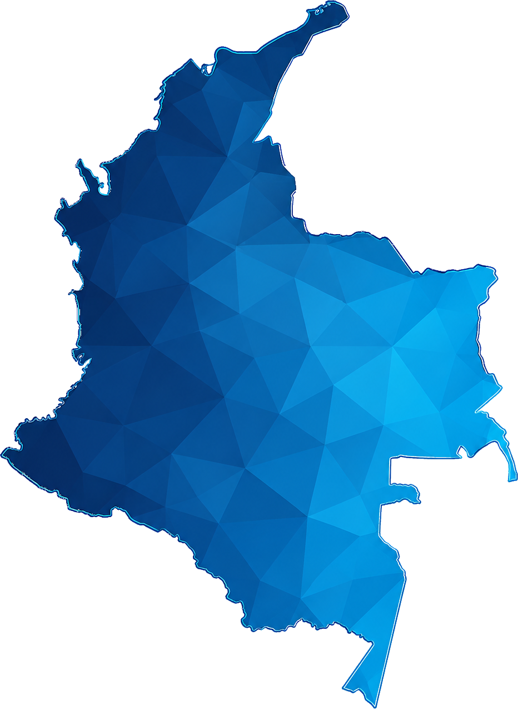

Herramienta de análisis para comparar universidades públicas, ajustar criterios según el tipo de financiador y documentar las validaciones requeridas antes de avanzar a una fase de estructuración técnica, financiera, jurídica e institucional.
El mapa presenta la lista corta priorizada. El universo completo puede activarse como capa adicional.

Perfil activo.
La metodología separa filtros de entrada, variables ponderadas, confianza del dato y sensibilidad por financiador.
Permite simular escenarios y comités de priorización. Los pesos se normalizan automáticamente.
Cada perfil activa una lectura distinta de valor, riesgo e impacto.
Vista compacta del universo analizado. Selecciona una fila para volver a la ficha de análisis.
| # | Universidad | Región / territorio | Operador / tarifa | Score | Téc. | Educ. | Inst. | Alineación | Confianza | Validación crítica |
|---|
Ruta sugerida para pasar de una lista corta preliminar a una etapa de estructuración e implementación.
Datos y responsables que deben abordarse en la siguiente fase.
La ausencia de facturas, perfiles de consumo o información de cubiertas reduce la confiabilidad del ranking.
Cubiertas, redes internas o capacidad de conexión pueden limitar el proyecto.
Debe validarse convenio, propiedad de activos, contratación y administración de ahorros.
La generación, tarifa o consumo real pueden diferir de los supuestos preliminares.
Se requieren reglas claras de asignación, trazabilidad y reporte de apoyos.